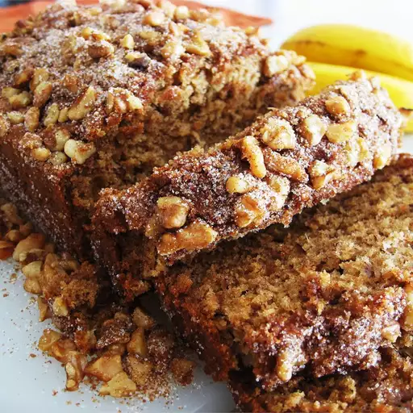

Maple banana bread
This is a different banana bread, sweetened with maple syrup. It's my absolute favorite banana bread.
I'm sure you will love it this version.!
Ingredients
- ½ cup butter, melted
- ½ cup maple syrup
- 1 egg
- 2 ripe bananas
- ½ teaspoon maple extract
- 3 tablespoons milk
- 2 cups all-purpose flour
- 1 teaspoon baking soda
- ½ teaspoon baking powder
- ¼ cup chopped walnuts
- 3 tablespoons white sugar
Steps
- Preheat oven to 350 degrees F (175 degrees C). Grease a 5x9 inch loaf pan.
- In a large bowl, mix the melted butter and maple syrup. Beat in the egg and bananas, leaving a few small chunks.
Stir in the maple extract and milk. In a separate bowl, mix the flour, baking soda, and baking powder, and stir into the banana mixture just until moistened.
Transfer to the prepared loaf pan. Mix the nuts and sugar, and sprinkle evenly over the batter.
- Bake 50 minutes in the preheated oven, or until a knife inserted in the center of the loaf comes out clean.